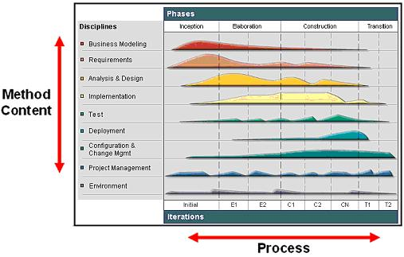
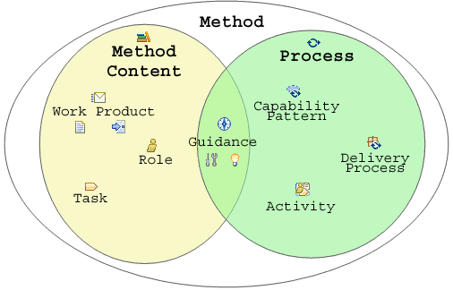

| Method Architecture Fundamentals |
 |
|
| Contents |
|---|
What is UMA?The Unified Method Architecture (UMA) is a process engineering meta-model that defines schema and terminology for representing methods consisting of method content and processes. Also see Concept: Key Capabilities of the Unified Method Architecture (UMA) for more details. Fundamental principle within UMAUMA is based on the following fundamental separations of concern:
The Basic Elements of UMAThe most fundamental principle of the Unified Method Architecture (UMA) is the separation of reusable core method content from its application in processes and almost all of UMA's elements are categorized along this separations. The Unified Method Architecture separates reusable core method content from its application in processes. Method content describes what is to be produced, the necessary skills required and the step-by-step explanation describing how specific development goals are achieved, independently of the placement of these items within a development lifecycle. Processes take these method elements and relate them into semi-ordered sequences that are customized to specific types of projects. For example, a software development project that develops an application from scratch performs development tasks such as "Develop Vision" or "Use Case Design" similar to a project that extends an existing software system. However, the two projects will perform the Tasks at different points in time with a different emphasis, i.e. they will perform the steps of these tasks at different point of time and perhaps apply individual variations and additions. The figure below shows the difference between method content and process by representing them as two different dimensions:

Method Content definition versus UMA's key concepts reflect this separation of method content from process as shown in the figure below. It show that a Method (also refered to as a Method Framework) comprises on method content described with concepts such Work Products, Roles, Task and Categories as well as Processes described with Activities, Capability Patterns, or Delivery Processes.
 Overview of how the key UMA concepts are positioned based on whether they represent method content or process Key Method Content Elements are: Key Process Elements are: Guidance comes in many types: |
© Copyright IBM Corp. 1987, 2005 All Rights Reserved |